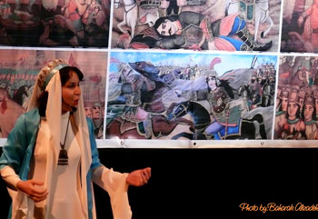

پذيرش > سایت نوشته ها > گردآفرید نقال


 گردآفرید نقال گردآفرید نقال
22 شهریور 1390 - گفتگوی نوشین شاهرخی با فاطمه حبیبیزاد (گردآفرید) - نسخه قابل چاپ
شهرزادنیوز: فاطمه حبیبیزاد، مشهور به گردآفرید، زاده و بالیدهی اهواز است. وی در تهران در رشتهی میراث فرهنگی فارغالتحصیل شده، اما حرفهی اصلی او نقالی است و به عنوان نخستین نقال زن شهرت یافته است.
فضای تنگ و مهاجرت
گردآفرید یکسال و نیمی پیش به دعوت بنیاد پژوهشهای زنان راهی ایالات متحده آمریکا میشود و در کالیفرنیا ماندگار می گردد. وی در مورد مهاجرت میگوید: "مهاجرت سختیها و غمهای خودش را دارد، ولی چیزهایی هم هست که نیرو میدهد. چرکها و ناراحتیهایی هست که باید زمان بگذرد تا من با انگیزه و نیرویی دوباره بتوانم برگردم به محیط کاری ایران با آن مسائل و مشکلات، جامعهی بسته و محدودیتهای قانونیاش."
گردآفرید از کسانی گله میکند که در مسند مسئولیت نشستهاند و بابت وظایفی که دارند پول میگیرند و در واقع باید در خدمت هنر و فرهنگ مملکت و هنرمندان و فعالان فرهنگی باشند، ولی فضایی برای فعالان فرهنگی باقی نمیگذارند: "به دلیل تنگنظری و سلیقهای عمل کردن کار به جایی میرسد که تو دیگر به خودت هم بدهکار میشوی و میخواهی بزنی بروی یک جای دور. من احتیاج داشتم که سر بزنم به کوه و بیابان. خیلی خسته و مأیوس و دلچرکین بودم، اما کار مرا رها نکرد تا گوشهای بنشینم."
پیام نقال
اگر نقالی را با مردانی میشناسیم که به هنگام حکایت با حرکات بدن و فن سخن حکایت را برای شنونده به فیلمی شنیداری تبدیل میسازند، این بار ما با زنی روبرو هستیم که حرف و پیامش را در قابل نقالی ارائه میدهد: "شاید دیگران حرف و پیامشان را در قالب نقاشی، فیلم یا تئاتر بیان میکنند. من به نظرم رسید برای حرف زدن از این قالب و ساختار میتوانم استفاده کنم که در نوع خودش به من امکانات وسیعی را میدهد. من به فعالیتهای فرهنگی و هنری خیلی علاقمند بودم، اما وقتی که در کارهای گروهی یا پروژههای دولتی میرفتم، حاکمیت سلیقه برقرار بود و باندبازی که عمیقا ناراحت میشدم و نمیتوانستم با آن مناسبات سازگاری پیدا کنم."
تئاتری یکنفره
گردآفرید از کودکی به داستان علاقمند بوده و ذهن خیالپرداز و تصویرسازش را متأثر از داستانهای تصویری و تخیلی میداند که به ویژه در کودکی خوانده و با آنان بزرگ شده است: " من به فن سخن خیلی علاقه داشتم و همیشه برایم جالب بود که شهرزاد قصهگو میتواند با کلامش آنقدر تأثیر بگذارد که معجزه کند و یک شهریار خونریز کینورز را رام کند. بنابراین علاقه به نمایش، به موضوعات کهن، بنمایههای اساطیری، افسانهها، فرهنگ عامه، همهی اینها در کنار هم مثل تکههای پازل در جایی کنار هم قرار گرفت، اما دلیلی که فکر میکنم مرا به این کار هل داد کار تکنفره بود. این کار بدون آن ساخت و پاختهایی که در سیستم گروهی و دولتی بود، میتوانست یکتنه انجام شود. چراکه نقالی تئاتری یکنفره است و نقال خودش مینویسد، خودش هم طراحی، کارگردانی و اجرا میکند."
قدرت کلام
گردآفرید به هنگام دانشجویی که هنوز در خانه شاهنامه ندارد و برای تهیهی شاهنامه به کتابخانهی دانشگاه میرود، نخستین اجرای نقالیاش را تجربه میکند: "اولین طوماری که به دستم رسید قیام کاوه آهنگر و داستان فریدون و ضحاک بود که خیلی زود حفظ شدم. شعرهای شاهنامه را چاشنی این طومار کردم و در یک محفل، دوستی به طور تصادفی فهمید که من طوماری را حفظ هستم و روی آن کار کردهام. او پشت میکروفن اعلام کرد که در گذشته مردان نقالی میکردند، اما ما امشب شاهد این خواهیم بود که یک زن نقالی کند. و من با اینکه خام و ناپخته بودم ولی به نام خداوند جان و خرد را که خواندم، چنان قدرتی کلام به من داد که نیمساعت برنامه اجرا کردم. و من خیلی تشویق شدم، شاهنامه را بیشتر مطالعه کردم، طومارهای بیشتری حفظ کردم و این ماجرا در میراث فرهنگی پیچید و هر دعوتی دعوت دیگری را به دنبال داشت."
حوزهای مطلقا مردانه
نقالی زمینهای میشود تا گردآفرید را به قهوهخانهها، زورخانهها و خانقاهها بکشاند و وی را با نقالیها و فنون سخنوری دراویش در پرسهخوانیها، شمایلخوانیها و پردهخوانیهای مذهبیشان در مراسم محرم، رسوم مذهبی و آداب ملی آشنا سازد: "اوایل نمیدانستم اینها باید ثبت شوند. فقط می رفتم و میدیدم. دیدم در تهران و شهر ری کافی نیست، میرفتم شاهعبدالعظیم که مرشد ترابی پاتوق داشت. کار من به سفر به سراسر ایران کشید."
گردآفرید در حوزهای قدم گذاشته که کاملا مردانه است. از کار نقالی گرفته تا پاتوق و دیدار در قهوهخانه و زورخانه تصاویری مطلقا مردانه در ذهن تداعی میکند، اما او چنان اعتباری در میان دراویش مییابد که مرشد ترابی در اختتامیهی جشنوارهای سنتی عصایش را به عنوان شاگرد خلف خود به گردآفرید هدیه میدهد: "مرشد ترابی بعدها طومارش را نیز به من داد. یعنی هرآنچه که سینه به سینه بهش رسیده بود، به من انتقال داد. این چیزی نبود که من در یک یا دو سال به آن برسم و کار سادهای نبود. هزار داستان و چم و خم داشت تا تو بتوانی آرام آرام عین نفوذ قطرات آب در سنگ نظر اینها را جلب کنی و به آن اعتبار و اعتباری که لازمه برسی. مسئله این بود که گنجینهی عظیمی از میراث داستانی و فنون سخنوری مثل طومارها، بحر طویلها، رجزخوانیها، قطعات طلوعی رزم، نثر مسجعخوانیها و... ثبت نشده و سینه به سینه آمده بود و اینها که بمیرند، گنجینهی عظیمی را با خودشان به خاک میبرند. در این سالها کسانی را میشناختم که مُردند و گنجینهای را با خود به خاک بردند."
گردآفرید، نامی خودجوش
گردآفرید میگوید هنگامی که استادانش این نام را بر وی گذاشتند، خودش شخصیت داستانی گردآفرید را نمیشناخت: "استادان و مرشدها گفتند که گردآفریدانه وارد میدان شاهنامه شدی و خودجوش این نام را بر من گذاشتند. پس از آن نیز مردم گردآفرید صدایم کردند و من هم باورم شد."
شب زفاف و رستم نانجیب؟!
گردآفرید در نقالیهایش در ایران لباسهایی چند سایز گشادتر با الهام از جامهی دراویش و ایران باستان میپوشید و حال پوشش خود را در کالیفرنیا با ایران مقایسه میکند: "حالا میفهمم که مو چقدر به آدم کمک میکند. لباس در اعتماد به نفس تو، در جنس صدایت نقش دارد اما فراتر از همهاینها، درسته که داستانها هزارانسال است که گفته شده، اما من در این فضا در انتقال معنی و مضمون خودم را کمتر سانسور میکنم، راحتتر و قدرتمندتر و گردنفرازتر هستم و با ترس و خمودگی روی صحنه نیستم. من دیگر راحت میتوانم از شب زفاف تهمینه و رستم حرف بزنم. گرچه اینجا هم به من اعتراض میشود. در کانادا آقایی به من اعتراض کرد که چرا رستم را نانجیب کردی؟!"
ثبت تصویر در ذهن
کار روزانهی گردآفرید نظمی ندارد و او گاه شبانهروز کار میکند و گاه چندروزی هیچ. در مورد کارهای آینده هم دلش میخواهد بتواند کتابهایش را به چاپ برساند: "انتشار گردآوریها، طومارها و این دایرةالمعارفی که هنوز به سامان نرسیده برای من کافی است."
بی هیچ پرسشی میتوان حدس زد که کتاب تأثیرگذار بر سرنوشت گردآفرید شاهنامه است، اما او در کنار شاهنامه از کتابهای دیگری نیز میگوید: "در دورهی دبستان کتابهای ژول ورن را میخواندم. ذهن خیالپرداز و تصویرساز من از همان ژول ورن و داستانهایش پرداخته شد. تصویر باعث میشود که من حفظ کنم و نه کلمات و شاهنامه را به دلیل فضاهای تصویریاش خوب حفظ میکنم."
رخشی در زمین کشاورزی
گردآفرید علاقهای به غذاهای رستوران ندارد و ترجیح میدهد که غذایش را خودش بپزد و با طنز میگوید: "بگذار کمی از خودم مثبت تعرف کنم. کار خانهام خوبه. به ویژه که کارم هم در خانه است. البته ریخت و پاش کاغذ و کتاب دارم."
حرفهی گردآفرید تفریح او نیز هست، به ویژه که بسیار در سفر است: "دیدار از آدمهای مختلف، شهرها و جاهای دیدنی، مراکز خرید، تئاتر شهر و ارکستر و کنسرت موسیقی تفریح من هستند. رقص و سوارکاری و اسب را هم خیلی دوست دارم." و ادامه میدهد که اگر نقال و نویسنده نمیشد، شاید در زمین کوچکی کشاورزی میکرد و اسبی هم می داشت.
گردآفرید از هر موسیقیای که مو بر تنش سیخ کند لذت میبرد. و هرچند این چندروزه ترانههای قمر را گوش میدهد، اما علاقهی ویژهای به سیما بینا دارد.
شهرزاد نیوز
ارسال به
بالاترین
،
توییتر
،
فریندفید
،
فیسبوک
در همين بخش :
 یک خبر تلخ؟ یک قانونشکنی؟ یک تصمیم بخشنامهای جدید؟ یک خبر تلخ؟ یک قانونشکنی؟ یک تصمیم بخشنامهای جدید؟
چرا بایست به سکسوالیته پرداخت؟ / نفیسه آزاد
آزارجنسی خانگی؛ «قربانی» نه، «نجات یافته»
زنان، بزرگترین بازندگان بهار عرب
سانسور از دیدگاه جنسیتی/الهه امانی
ديگر بخش ها :
طرح یک میلیون امضا
|
مقالات
|
سایت نوشته ها
|
اخبار
|
گزارش كمپين
|
گفت و گو
|
علیه سکوت
|
كوچه به كوچه
|
نامه های شما
|
گزارش ویژه
|
گفتگو با اعضا
|
ویژه سالگرد کمپین
|
تصویر برابری
|
دل آرام علی
|
تریبون
|
مقالات
|
تاریخ شفاهی
|
خارج از چارچوب
|
کتابخانه
|
درباره کمپین
|
کمپین در شهرها
|
کمپین در بند
|
صدای تغییر
|
ویژه 22 خرداد
|
لایحه حمایت از خانواده
|
گالری
|
عشا مومنی
|
امیر یعقوبعلی
|
خدیجه مقدم
|
راحله عسگری زاده و نسیم خسروی
|
پروین اردلان،جلوه جواهری، مریم حسین خواه، ناهید کشاورز
|
زینب پیغمبرزاده
|
سعیده امین، سارا ایمانیان، محبوبه حسین زاده، ناهید کشاورز و همایون نامی
|
احترام شادفر
|
نسیم سرابندی زاده،فاطمه دهدشتی
|
وبلاگ مهمان
|
پرونده خرم آباد
|
دستگیری ها
|
مریم مالک
|
پرستو اللهیاری
|
مهرنوش اعتمادی
|
سمیه رشیدی
|
Other Languages
|
همراهان
|
«فراخوان کمپین ده روز با بهاره هدایت»
| English
|